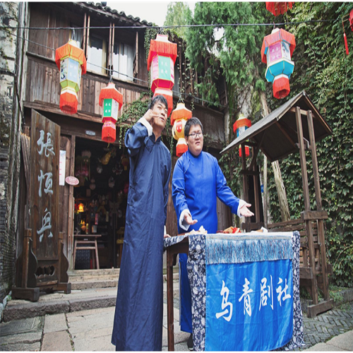
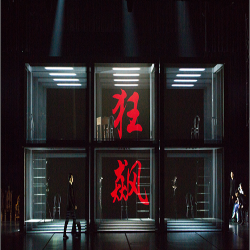

往期活动

2018年5月28日
第六届乌镇戏剧节青年竞演古镇嘉年华

2018年4月
古北水镇艺术塾 | 这个春天，一起在长城脚下伸展肢体，聆听自然

2017年6月7日
《狂飙》来袭，文化乌镇也是公益乌镇

2017年10月3日
10月3日浙江绍兴 《大先生》回家演出
近期活动
2018年乌镇戏剧节将于10月18日至28日期间在乌镇盛大开幕！
本届戏剧节以“容”为主题：容者，盛也。犹如大地，承载万物生长。
本届乌镇戏剧节特邀剧目山容海纳、包罗万象，特别体现于——地域涵盖之广：特邀剧目来自亚洲、非洲、欧洲、美洲、大洋洲等世界五大洲；创作内容之多：主题涉及历史、赎罪、时间纵横、种族、环境问题、身份认同、爱情、欲望救赎、基因繁殖、个体成长、人工智能；艺术形态之丰：舞台呈现富含当代艺术、实验戏剧、浸没空间、表现主义传统、象征概念、多媒体影像、哑剧、舞蹈动态、音乐剧场……乌镇戏剧节像一座巨大的人类文化星云，将古今中外的一切舞台艺术吞吐收纳，多维赋能，这也是今年主题“容”的具体呈现。
第六届乌镇戏剧节青年竞演古镇嘉年华
古北水镇艺术塾 | 这个春天，一起在长城脚下伸展肢体，聆听自然
《狂飙》来袭，文化乌镇也是公益乌镇
10月3日浙江绍兴 《大先生》回家演出
春秋时期，乌镇是吴越边境，吴国驻兵于此设防越国，“乌戍”就由此而来. 唐时，乌镇隶属苏州府。唐咸通十三年(872)的《索靖明王庙碑》(朱洪撰并书，吴晔篆额)首次出现“乌镇”的称呼，此前无据。这一时期的另一块碑《光福教寺碑》中则有“乌青镇”的称呼。乌镇称“镇”的历史可能从此开始，当时，镇地置有镇遏使的官职。 乌镇是河流冲积平原，沼多淤积土，故地脉隆起高于四旷，色深而肥沃，遂有乌墩之名。其实，这类地名在当地并不鲜见。距乌镇数公里处有一村叫红墩，镇志上说：“红墩在镇西，地脉坟起，厥土赤壤，村以是名。” 旁又有一村名紫墩，就是因为多紫色土的缘故。红墩、紫墩的命名为乌墩名称的传神写照说提供了现实的佐证。 不过在乌镇民间，人们更喜欢更带感情色彩的镇名由来传说。唐宪宗元和年间，将军乌赞为平定叛乱，牺牲在乌镇，人们为了纪念这位使百姓免遭战乱之苦的将军，在乌镇建造了一座乌将军庙，镇也以其名命之。宋元丰初年（1078），已有分乌墩镇、青墩镇的记载，南宋宋光宗登基，他的名字是“惇（音同‘敦’）”， 为避光宗讳，天下念“敦”的字全不能用，自此之后乌墩就定称为乌镇。乌墩镇、青墩镇也改称为乌镇、青镇 1950年，乌、青两镇合并后称乌镇至今。
据乌镇近郊的谭家湾古文化遗址考证表明，大约在7000年前，乌镇的先民就在这一带繁衍生息了。那一时期，属于新石器时代的马家浜文化。春秋时期，乌镇是吴越边境，吴国在此驻兵以防备越国，史称"乌戍"。秦时，乌镇属会稽郡，以车溪（即今市河）为界，西为乌墩，属乌程县，东为青墩，属由拳县，乌镇分而治之。其后，乌镇或属浙江的湖州、嘉兴管辖，或属江苏的苏州治理。 唐时，乌镇隶属苏州府。后梁，隶属不变，为吴越国地。后晋天福五年（940），置秀州，青墩遂属嘉兴县隶秀州。元丰初年，有分乌墩镇、青墩镇的记载，后为避光宗讳，改称乌镇、青镇。嘉定年间，升嘉兴为军，青镇遂属崇德隶嘉兴军。宝庆二年（1226），改湖州为安吉，乌镇为安吉州乌程县地。宋代，镇地设监镇官，管火禁和酒税，并招军习武，以御盗寇。元至元十四年（1277），乌镇为湖州路乌程县地，青镇为嘉兴路崇德县地。镇地设都巡检。 由于乌镇是两省、三府、七县交接处，治安环境十分复杂，所以，明清时在乌镇特别设立浙直分署和江浙分署，以一小镇而行使相当于府衙的职能。 民国元年（1912），乌、青两镇依旧分治。1950年5月，乌、青两镇终于合并，称乌镇，属桐乡县，隶嘉兴，直到今天。
Copyright © 2018.All rights reserved. -JMX-designed for乌镇旅游